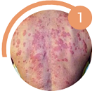
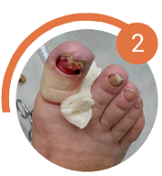
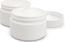

Грибок - это опасная инфекция
которая угрожает вам и вашим близким, ведь с каждым днем грибок приводит к:

Сложным формам аллергии
Может появится сильная реакция на не привычную пищу,
одежду средства гигиены

Потере ногтя и ампутации пальца
После полного разрушения ногтя
грибок распространяется на палец,
что приводит к его ампутации
Тяжелому поражению внутренних органов
Может привести к повреждениям
мозга, слепоте, отказу печени, почек
и сердца
Статистика: каждые 60 секунд
врачи диагностируют опасные поражения внутренних органов,
вызванные грибком, у 1-го пациент
вызванные грибком, у 1-го пациент
Почему большинство средств против грибка малоэффективны
Чудо-средства
Обещают, что избавят от грибка меньше, чем за месяц, хотя
это невозможно.

Ho
Ноготь – это роговой слой кожи.
Он не имеет живых клеток. Часть ногтя,
которая уже поражена грибком, не может выздороветь
до полного его отрастания. Единственный
способ вылечить грибок – подавлять его распространение
все время, пока ноготь не отрастет заново.
Для этого требуется 4-6 месяцев.
Наружные средства
Способны устранить внешние проявления грибка.
(кремы, лаки, пластыри)
(кремы, лаки, пластыри)
Ho
Очаг заражения находится
под ногтевой пластиной, а наружные средства
не способны его достичь - они действуют только
на на верхнем слое ногтя, поэтому не способны
избавить от грибка. Для повышения их эффективности
рекомендуется спиливать ноготь полностью,
но это больно, некрасиво
и совершенно не дает гарантий выздоровления.
Внутренние средства
Убивают грибковую инфекцию
в организме.
(таблетки, саше, капли)
(таблетки, саше, капли)
Ho
Могут подействовать только
при длительном использовании
(6 - 8 месяцев). За это время внутренние средства в 93%
случаев наносят серьезный
ущерб печени, вызывают сыпь, отеки, диарею, рвоту. К тому же,
каждое средство эффективно
только против одной группы
грибка из 4000 видов.
Даже если вы используете наружные и внутренние средства
одновременно, это не гарантирует
избавления от грибка: они могут конфликтовать между собой
по составу и блокировать действие
друг друга или быть неэффективными против вашего типа грибка.
вывод:
Почему таблетки Микоцин от грибка
так эффективны?
Другие средства не дают полную защиту от грибковых инфекций и могут быть опасны

Кремы и мази
Не лечат грибок, потому
что не проникают в ногтевую пластину.
Только временно избавляют от симптомов инфекций.
Могут вызвать сильную аллергию
и раздражения на коже.
Кремы и мази
Не лечат грибок, потому
что не проникают в ногтевую пластину.
Только временно избавляют от симптомов инфекций.
Могут вызвать сильную аллергию
и раздражения на коже.
Кремы и мази
Не лечат грибок, потому
что не проникают в ногтевую пластину.
Только временно избавляют от симптомов инфекций.
Могут вызвать сильную аллергию
и раздражения на коже.
Зачем лечить сложнее, дольше и дороже, если есть Микоцин?